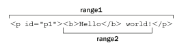
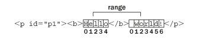

范围(Range)
高程P332
Firefox、Opera、Safari 和 Chrome 都支持 DOM 范围。IE 以专有方式实现了自己的范围特性。
DOM中的范围
1.DOM2 级在 Document 类型中定义了 createRange()方法。 可以通过 typeof document.createRange === 'function' 监测是否支持。 2.创建范围 var range = document.createRange(); 3.每个范围由一个 Range 类型的实例表示，这个实例拥有很多属性和方法。 1) startContainer 包含范围起点的节点。 2) endContainer 包含范围终点的节点。 3) startOffset 范围中第一个子节点的索引。 4) endOffset 范围中最后一个子节点的索引。 5) commonAncestorContainer：startContainer 和 endContainer 共同的祖先节点在文档树中位置最深的那个。 4.用 DOM 范围实现简单选择 1) selectNode(node) 选取一个DOM节点作为范围内容。 2) selectNodeContents(node) 选取一个DOM节点的子节点作为范围内容。 <p id="p1"><b>Hello</b> world!</p> var range1 = document.createRange(), range2 = document.createRange(), p1 = document.getElementById("p1"); range1.selectNode(p1); range2.selectNodeContents(p1); 如图1。 为了更精细地控制将哪些节点包含在范围中，还可以使用下列方法： 1) setStartBefore(refNode) 将范围的起点设置在refNode节点之前 2) setStartAfter(refNode) 将范围的起点设置在refNode节点之后 3) setEndBefore(refNode) 将范围的终点设置在refNode节点之前 4) setEndAfter(refNode) 将范围的终点设置在refNode节点之后 5.用 DOM 范围实现复杂选择 1) setStart() 2) setEnd() 可以使用这两个方法来模仿 selectNode()和 selectNodeContents()。 <p id="p1"><b>Hello</b> world!</p> var range1 = document.createRange(), range2 = document.createRange(), p1 = document.getElementById('p1'), p1Index = -1, i, len; for (i = 0, len = p1.parentNode.childNodes.length; i < len; i++) { if (p1.parentNode.childNodes[i] === p1) { p1Index = i; break; } } // 模仿 selectNode() range1.setStart(p1.parentNode, p1Index); range1.setEnd(p1.parentNode, p1Index + 1); // 模仿 selectNodeContents() range2.setStart(p1, 0); range2.setEnd(p1, p1.childNodes.length); 如图2。 6.操作 DOM 范围中的内容 在创建范围时 ，内部会为这个范围创建一个文档片段，范围所属的全部节点都被添加到了这个文档片段中。 为了创建这个文档片段，范围内容的格式必须正确有效。 在前面的例子中，我们创建的选区分别开始和结束于两个文本节点的内部，因此不能算是格式良好的 DOM 结构， 也就无法通过 DOM 来表示。但是，范围知道自身缺少哪些开标签和闭标签，它能够重新构建有效的 DOM 结构以便我们对其进行操作。 <p id="p1"><b>Hello</b> world!</p> 1) deleteContents() 这个方法能够从文档中删除范围所包含的内容。 var p1 = document.getElementById('p1'), helloNode = p1.firstChild, worldNode = p1.lastChild, range = document.createRange(); range.setStart(helloNode, 2); range.setEnd(worldNode, 3); range.deleteContents(); 如图3。 2) extractContents() 也会从文档中移除范围选区，和 deleteContents() 区别在于 extractContents() 会返回范围的文档片段。 var p1 = document.getElementById('p1'), helloNode = p1.firstChild, worldNode = p1.lastChild, range = document.createRange(); range.setStart(helloNode, 2); range.setEnd(worldNode, 3); var fragment = range.extractContents(); p1.parentNode.appendChild(fragment); 结果： <p><b>He</b>rld!</p> <b>llo</b> wo 3) cloneContents() 创建范围对象的一个副本 这个方法与 extractContents()非常类似，因为它们都返回文档片段。它们的主要区别在于，cloneContents()返回的文档片段包含的是范围中节点的副本，而不是实际的节点。 var p1 = document.getElementById('p1'), helloNode = p1.firstChild, worldNode = p1.lastChild, range = document.createRange(); range.setStart(helloNode, 2); range.setEnd(worldNode, 3); var fragment = range.cloneContents(); p1.parentNode.appendChild(fragment); 结果： <p><b>Hello</b> world!</p> <b>llo</b> wo
图1

图2
